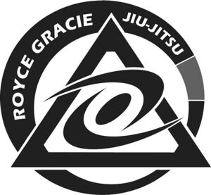

Trade Mark Journal No.2025/020 16 May 2025
WO0000001839498 (25,41)
Office of origin: United States of America
Date of International Registration:3 October 2024
Date of designation in the UK:
3 October 2024

The mark consists of a circle design, a triangle design, two half-moons, an oval design, and the stylized text "ROYCE GRACIE JIU JITSU".
Registration of the designation shall give no exclusive right to the word "JIU-JITSU"
- Class 25
- Clothing, namely, shirts, sweatshirts, hooded sweatshirts, athletic shirts, jackets, shorts, sweatpants, pants, athletic pants, rash guards, spats, hats, caps, headwear, bandanas, gis and belts.
- Class 41
- Providing online non-downloadable videos featuring information in the fields of jiu jitsu, martial arts, mixed martial arts, boxing, kick-boxing, self-defense, law enforcement, personal safety, and physical fitness; entertainment and educational services, namely, providing online, virtual and in-person conferences, seminars, workshops, retreats, classes, courses, lectures and one-on-one lessons and training in the fields of jiu jitsu, martial arts, mixed martial arts, boxing, kick-boxing, self-defense, law enforcement, personal safety, and physical fitness, and distribution of course material in connection therewith; coaching services in the fields of jiu jitsu, martial arts, mixed martial arts, boxing, kick-boxing, self-defense, law enforcement, personal safety, and physical fitness, and distribution of course material in connection therewith; arranging and conducting martial arts, mixed martial arts and jiu jitsu performances, tournaments, events and exhibitions for entertainment purposes; providing information on jiu jitsu, martial arts, mixed martial arts, boxing, kick-boxing, and physical fitness via a web site.
4K Sports, Inc.
Representative: Daniel R. Frijouf Frijouf, Rust & Pyle, P.A., 4601 N. Armenia Avenue, TAMPA FL 33603, UNITED STATES OF AMERICA